React case study
This case study demonstrates using Eunice on a larger code base, that requires configuration and has bi-directional dependencies.
A simpler introduction to Eunice, that doesn't require any configuration and has mostly uni-directional dependencies, can be found in the Polly.JS case study.

I've based this case study on the 0f3838a commit in the React repository. I've created a fork to make it easier if you want to follow along:
git clone https://github.com/DevSnicket/react.git react-eunice
cd react-eunice
Eunice can be downloaded from NPM and run without installing using NPX:
npx eunice
You will be prompted to accept a EULA. Eunice is free to use on open source projects, and its free to use for education and training. Therefore contributions to React and following along with this case study both qualify. There is also an evaluation period to try Eunice out on closed source commercial software.
configuration
Running Eunice on React without any parameters will raise the following error:
Error: Analysis of file "packages\create-subscription\index.js" raised the following error.
Unexpected token, expected ";" (14:5)
This error is raised because React uses Flow syntax in its JavaScript. Eunice uses Babel to parse JavaScript and a Flow plug-in can be enabled with the option babel-parser-plugins. Some of the Babel parser plug-ins are enabled by default and so will also need to be specified so they aren't disabled when enabling Flow:
npx eunice \
--babel-parser-plugins=classPrivateProperties \
--babel-parser-plugins=classProperties \
--babel-parser-plugins=dynamicImport \
--babel-parser-plugins=flow \
--babel-parser-plugins=jsx
Running Eunice with the Babel plug-ins specified above will raise a further error:
Error: Analysis of file "scripts\prettier\index.js" raised the following error.
'return' outside of function (32:2)
Eunice parses with a Babel source type of module, but the file specified in the error is a script. The option ignore-path-pattern can be used to ignore the "script" directory. I've also included the default ignores and one for babel.config.js. The option is specified with double quotes as the pipe character is used in the regular expression.
npx eunice \
--ignore-path-pattern="(^(\.|babel.config.js|scripts)|node_modules)" \
--babel-parser-plugins=classPrivateProperties \
--babel-parser-plugins=classProperties \
--babel-parser-plugins=dynamicImport \
--babel-parser-plugins=flow \
--babel-parser-plugins=jsx
Analysis with the options above should complete successfully and output a eunice.html file. Opening the file in a browser should show the following:
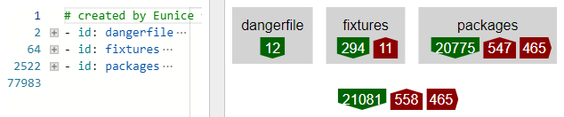On the left a text editor is displaying 77,911 lines of YAML produced by Eunice's analysis of React.
On the right is a graphical representation of all the dependencies and the root directories (fixtures and packages) in React. The green and red count arrows represent the dependencies, categorized as follows:
Ideally all dependencies should match and only be in green down arrows. This means Eunice considers all the dependencies to be unidirectional, including indirect dependencies.
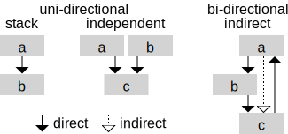An example of software that’s close to having only unidirectional dependencies is Eunice itself. You can see this by looking at its dogfooding:

You can interact with Eunice's dogfooding here.
inferred stacks
When an order isn't defined for items (e.g. the file-system) Eunice can infer stacks for items that only have uni-directional dependencies.
Selecting the packages directory will open it and show that Eunice has inferred two levels, of three items each:
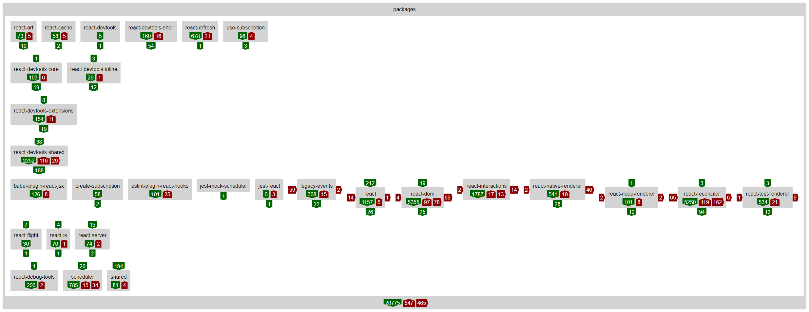directory specific stacks
A stack can also be specified by creating a YAML file in a directory. Eunice automatically looks for files named .eunice-stack.yaml saved with the code.
I've worked through React, created 13 stack files and committed them to the Git branch.
The stacks have resolved all the remaining 990 unstructured dependencies; however, I wasn't able to define structures that would make all dependencies go in the same direction. These mismatching dependencies are shown in the red up arrow count of 653 below:
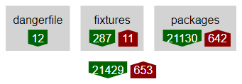You can see more specific dependency count arrows and the structure I chose, by looking inside React's packages sub-directory:
- [ react-devtools, react-devtools-shell ]
- [ react-devtools-core, react-devtools-inline ]
- - react-devtools-extensions
- [ react-devtools-shared, react-art, react-interactions, react-refresh ]
- - react-test-renderer
- [ react-dom, react-native-renderer, react-noop-renderer ]
- [ legacy-events, react-flight, react-reconciler, react-server ]
- [ create-subscription, jest-mock-scheduler, jest-react, react-cache, react-is, react-stream, use-subscription ]
- [ babel-plugin-react-jsx, eslint-plugin-react-hooks, react, react-debug-tools, scheduler, shared ]
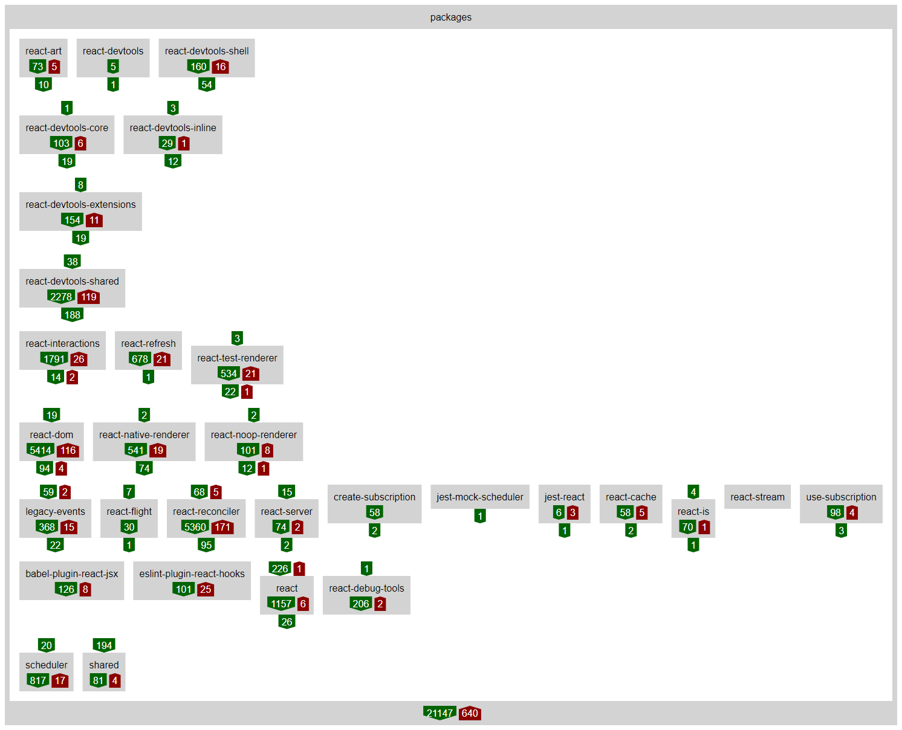
Stacks were also created for react-dom and its sub-directories client and events. I got better matching counts by putting events in a level below the other items such as client and server:
- - existing
- - events
- - shared
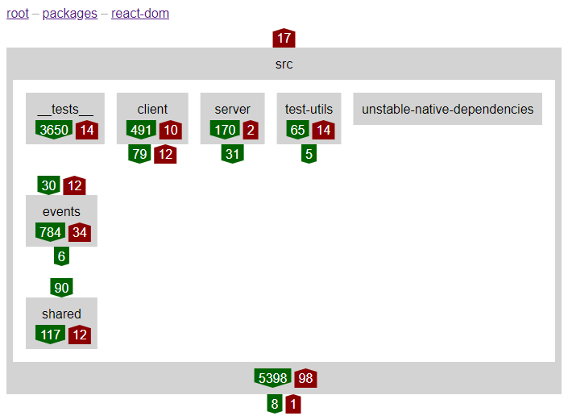
Another relatively complex stack was created for react-reconciler. This directory has even more items than the packages directory. Although a lot of them had uni-directional dependencies and stacked automatically in the bottom two levels:
- - ReactFiberWorkLoop
- [ ReactFiberCompleteWork, ReactFiberThrow, ReactFiberUnwindWork ]
- [ ReactFiberBeginWork, ReactFiberCommitWork ]
- [ ReactChildFiber, ReactFiberClassComponent ]
- [ ReactFiberHooks, ReactFiberHydrationContext ]
- - ReactFiber
- - ReactFiberHotReloading
- [ ReactFiberNewContext, ReactFiberReconciler ]
- - existing
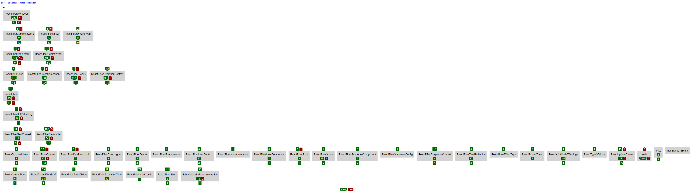
groups
The packages directory has enough items and levels that it can be hard to remember what all the dependency relationships are. This can be improved by grouping items that share concepts and dependency relationships.
The six sub-directories highlighted below could be grouped, as they all relate to devtools and can be stacked together due to cohesive dependencies:
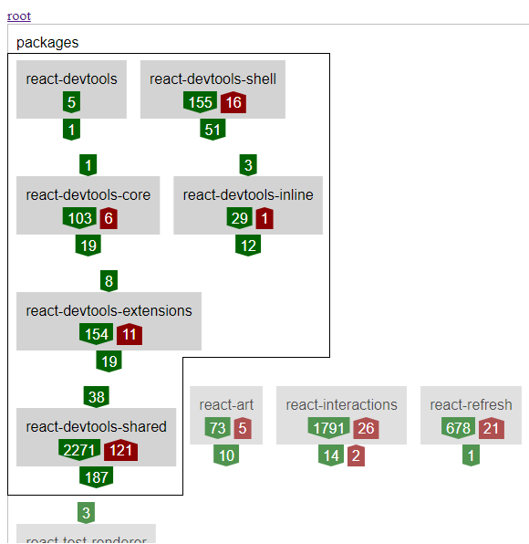To investigate how this might look the Eunice stack file in the packages directory can be modified. I've added a new item named react-devtools-group and moved the six related items inside it:
- - id: react-devtools-group
dependencyPermeable: true
items:
- [ react-devtools, react-devtools-shell ]
- [ react-devtools-core, react-devtools-inline ]
- - react-devtools-extensions
- - react-devtools-shared
- [ react-art, react-interactions, react-refresh ]
- - react-test-renderer
- [ react-dom, react-native-renderer, react-noop-renderer ]
- [ legacy-events, react-reconciler ]
- [ create-subscription, jest-mock-scheduler, jest-react, react-cache, react-is, react-stream, use-subscription ]
- [ babel-plugin-react-jsx, eslint-plugin-react-hooks, react, react-debug-tools, scheduler, shared ]
The new item has been marked in the YAML as dependencyPermeable so that Eunice's dependency resolution will look inside it even though it won't be specified in the code's import statement paths.
Re-running the analysis and reloading the web page shows that this makes the packages directory clearer without adding any mismatching dependencies:
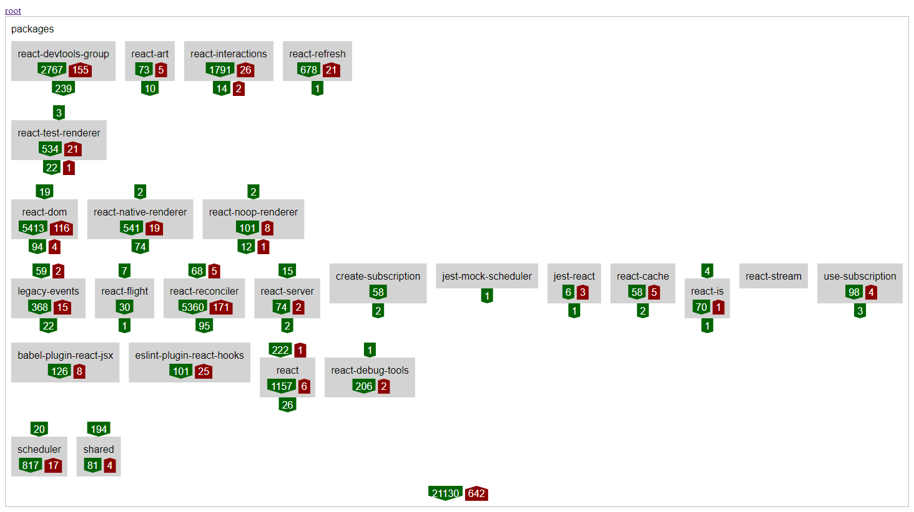Selecting the new react-devtools-group shows its stack:
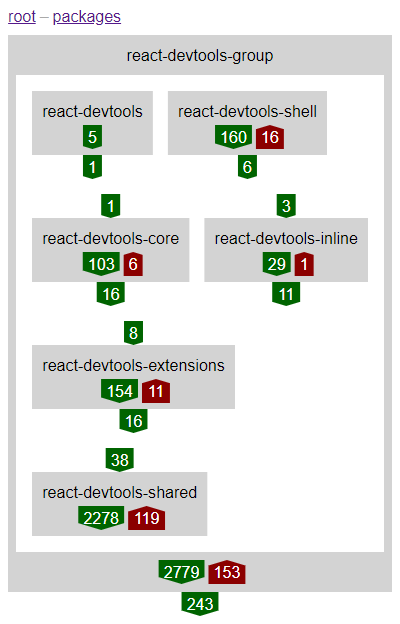To make this grouping more permanent and implicit the Eunice stack above could be replaced with a new sub-directory in the code.
The example above was an obvious group to create, with the shared concept (devtools) already defined, high cohesion within its items and a simple relationship with the rest of the system. To get the same effect elsewhere, more detailed work might be required, directly in the code, moving small pieces around from across many parts of a system.
tests
While looking through React's source code I noticed some of the package scoped bi-directional dependencies were only in the tests. This can be investigated by modifying the ignore path pattern to exclude test related directories:
npx eunice \
--ignore-path-pattern="(^(\.|babel.config.js|scripts|fixtures)|node_modules|__tests__)" \
--babel-parser-plugins=classPrivateProperties \
--babel-parser-plugins=classProperties \
--babel-parser-plugins=dynamicImport \
--babel-parser-plugins=flow \
--babel-parser-plugins=jsx
Re-running analysis and reloading the web page shows that with tests ignored, there aren't any bi-directional dependencies between package sub-directories. This matches that the NPM packages created from those sub-directories would also only have uni-directional dependencies.
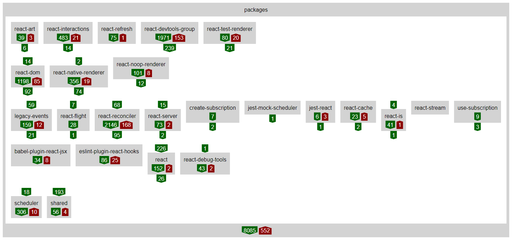Note Eunice has detected that react-test-renderer no longer needs to be stacked in a separate level and so has automatically moved it up into the level above:
conclusion
You can interact with the Eunice analysis for this case study here.
The structures I've chosen for React are what I think are best fit for the current dependencies. This structure might not be ideal for React and its future development. It might be beneficial to structure differently, which would have higher counts of current mismatching dependencies, but would encourage contributors to change the code and its dependencies to better match that intended structure.
I defined these structures for React as an individual; however, by committing stack files to source control and running Eunice (e.g. in continuous integration), teams could collaborate and collectively define and improve the structure.
featured on
dev.to- Analyzing the architecture of React, its structure and dependencies, with Eunice
- Grouping code with Eunice
- Test scope and isolation with Eunice